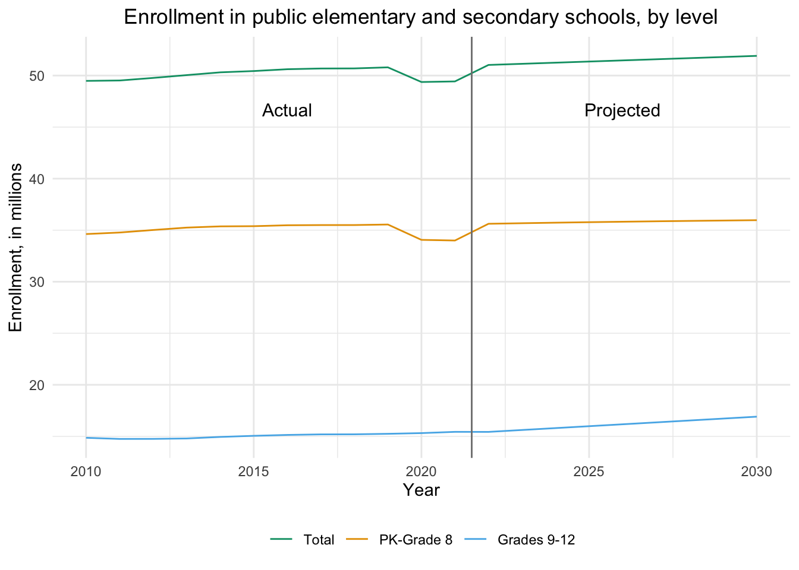
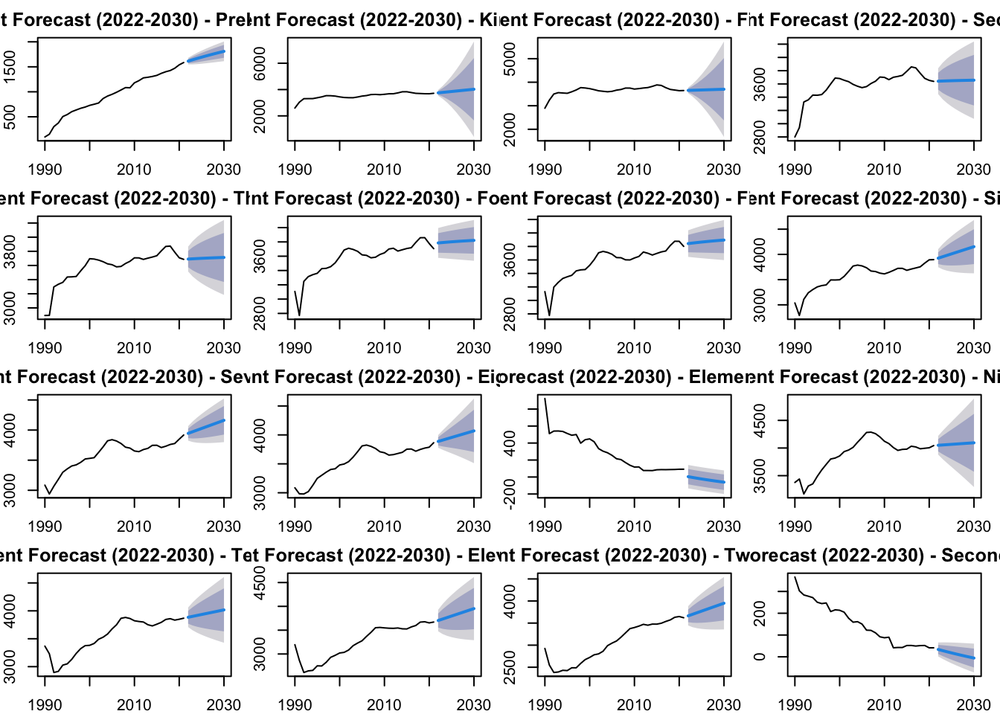

Projecting Elementary and Secondary School Enrollment
Education Planning
Student Enrollment Forecasting
Education Statistics
Data Analysis
School Resource Allocation
Education Budgeting
Educational Demography
Time Series Analysis
Time Series Forecasting Methods
Data Visualization
Education Policy
Education Decision Making
Quantitative Methods in Education
Education Management
Education Administration
R Programming
Statistical Computing
A detailed walkthrough on projecting elementary and secondary school enrollments from 2022-2030
Introduction
According to the National Center for Education Statistics (NCES), total public and private elementary and secondary school enrollment was 56 million in fall 2019, representing a 3 percent increase since fall 2010. However, between fall 2019 and the first fall of the coronavirus pandemic in fall 2020, enrollment decreased 2 percent. From fall 2020 to fall 2030, enrollments are expected to decrease another 6 percent. Both public and private school enrollments are projected to be lower in 2030 than in 2019.
Accurate enrollment projections in elementary and secondary institutions are crucial for several reasons:
Budgeting and resource allocation: Enrollment projections help school districts plan their budgets effectively. By estimating the number of students expected to attend, districts can allocate resources appropriately, ensuring they have enough teachers, classrooms, and educational materials to meet the demand.
Short-term and long-term planning: Enrollment projections inform both short-term and long-term decision-making. In the short term, they help determine staffing needs and budgeting for specific programs. In the long term, they assist in planning for capital projects, such as building new schools or expanding existing facilities.
Public trust and support: Accurate enrollment projections can demonstrate the need for capital projects to the public, potentially influencing the outcome of school bond referenda. When the community understands the necessity of these projects based on reliable data, they are more likely to support them.
Improved forecasting accuracy: Larger schools or charter management organizations (CMOs) tend to have more accurate enrollment forecasts. With a larger student body, the impact of individual student withdrawals or last-minute changes is less significant. Additionally, larger organizations have more resources for dedicated forecasting and planning functions.
Financial stability: For charter schools, enrollment directly determines their revenue, as public funding is awarded on a per-pupil basis. Accurate enrollment projections are essential for charter schools to make informed financial decisions, such as hiring teachers and staff, to maintain the required teacher-student ratios.
Organizational decision-making: Enrollment forecasts are particularly sensitive for small charter schools, as adding or removing staff based on these projections can have a significant impact on their operations. Accurate projections help these schools make critical organizational decisions with confidence.
Accurate enrollment projections are vital for effective budgeting, resource allocation, short-term and long-term planning, maintaining public trust, ensuring financial stability, and informed decision-making in elementary and secondary institutions. With that said, many institutions lack a reliable means by which to make long-range enrollment forecasts. I’m here to help.
How to Project Enrollment
Projection Techniques
There are several key methods that can be used for projecting student enrollment in elementary and secondary institutions such as ratio-based methods, regression-based methods, the dwelling unit multiplier method, and the extended demographic model. After some research and experimentation, I elected to use an exponential smoothing technique.
Exponential Smoothing
Single exponential smoothing is a forecasting method suited for data that is relatively stable over time, where future values are expected to be around the same central value as observed historically, without significant shifts up or down. In developing projections of elementary and secondary enrollments, for example, the rate at which students progress from one particular grade to the next (e.g., from grade 2 to grade 3) can be projected using single exponential smoothing. Thus, this percentage is assumed to be constant over the forecast period.
Generally, exponential smoothing places more weight on recent observations than on earlier ones. The weights for observations decrease exponentially as one moves further into the past. As a result, the older data have less influence on the projections. The rate at which the weights of older observations decrease is determined by the smoothing constant.
When using single exponential smoothing for a time series, \(P_t\), a smoothed series, \(P\), is computed recursively by evaluating where \[\hat{P}_t = \alpha~P_t + (1 - \alpha) P_{t-1}\]\(0 < \alpha \leq 1\) is the smoothing constant.
By repeated substitution, we can rewrite the equation as \[ P_t = \alpha \sum_{s=0}^{t-1} (1 - \alpha)^s P_{t-s}\]where time, \(s\), goes from the first period in the time series, \(0\), to time period \(t-1\). The forecasts are constant for all years in the forecast period. The constant equals \[\hat{P}_{T+k} = \hat{P}_t\]where \(t\) is the last year of actual data and \(k\) is the \(k^{th}\) year in the forecast period where \(k > 0\).
These equations illustrate that the projection is a weighted average based on exponentially decreasing weights. For higher smoothing constants, weights for earlier observations decrease more rapidly than for lower smoothing constants.
Approach Overview
I utilized the grade progression rate method to project grades 2 through 12. With this approach, a rate of progression from each grade (1 through 11) to the next grade (2 through 12) was projected using single exponential smoothing. For example, the rate of progression from grade 2 to grade 3 is the current year’s grade 3 enrollment expressed as a percentage of the previous year’s grade 2 enrollment. To calculate enrollment for each year in the forecast period, the progression rate for each grade was applied to the previous year’s enrollment in the previous grade.
I also utilized the enrollment rate method to project prekindergarten, kindergarten, and first-grade enrollments as well as elementary and secondary ungraded enrollments. In this method, an enrollment rate for each grade (or ungraded level) was projected using single exponential smoothing. For example, the enrollment rate for grade 1 is the number of students enrolled in grade 1 divided by the number of 6-year-old children. To calculate enrollment for each year in the forecast period, the enrollment rate for each category was applied to the projected population in the appropriate age group.
Assumptions Underlying This Approach
The grade progression rate method assumes that past trends affecting public and private elementary and secondary school enrollments will continue over the forecast period. This assumption implies that all factors influencing enrollments will display future patterns consistent with past patterns. This method implicitly includes the net effect of such factors as migration, dropouts, deaths, non-promotion, and transfers between public and private schools.
Procedures and Equations
The notation and equations that follow describe the basic procedures used to project elementary and secondary enrollments in each of the three elementary and secondary enrollment projection models.
Let:
\(j\) = Subscript denoting grade
\(t\) = Subscript denoting time
\(T\) = Subscript of the first year in the forecast period
\(G_{j,t}\) = Enrollment
\(R_{j,t}\) = Progression rate.
Step 1: Calculate historical grade progression rates for each of grade. The first step in projecting the enrollments using the grade progression method was to calculate, for each grade, a progression rate for each year of actual data used to produce the projections except for the first year. The progression rate for grade \(j\) in year \(t\) equals \[R_{j,t} = \frac{G_{j,t}}{G_{j-1,t-1}}\]Step 2. Produce a projected progression rate for each grade. Projections for each grade’s progression rate were then produced for the forecast period using single exponential smoothing. A separate smoothing constant, chosen to minimize the sum of squared forecast errors, was used to calculate the projected progression rate for each grade. Single exponential smoothing produces a single forecast for all years in the forecast period. Therefore, for each grade \(j\), the projected progression rate, \(\hat{R}_j\), is the same for each year in the forecast period.
Step 3. Calculate enrollment projections for each grade. For the first year in the forecast period, \(T\), enrollment projections, \(\hat{G}_{j,T}\), were produced using the projected progression rates and enrollments from the last year of actual data, \(T–1\). Specifcally, \[\hat{G}_{j,T} = \hat{R}_j \cdot \hat{G}_{j-1, T-1}\]This same procedure was then used to produce the projections for the following year, \(T+1\), except that enrollment projections for year \(T\) were used rather than actual numbers: \[\hat{G}_{j,T+1} = \hat{R}_j \cdot \hat{G}_{j,T}\] The enrollment projections for year \(T\) were those just produced using the grade progression method.
The same procedure was used for the remaining years in the projections period.
Step 4. Calculate total elementary and secondary enrollments by summing the projections for each grade and the ungraded categories. To obtain projections of total enrollment, projections of enrollments for the individual grades, elementary ungraded, and secondary ungraded were summed.
Tools Utilized
There are numerous tools to select from when tackling an exercise like this. Instead of delving into the varous options, I decided to simply tell you what I used:
- Microsoft Excel
- Posit RStudio Desktop1
- This required an installation of R, the programming language.
Process Overview
The process for forecasting student enrollment by grade level and total enrollment using historical data begins by viewing the enrollment data in Excel and making some minor adjustments before loading it into RStudio and preparing the data by renaming columns and calculating the total enrollment. A custom forecasting function is defined using the AAN (Additive error, Additive trend, No seasonality) exponential smoothing model from the forecast package. The forecasting function is then applied to each grade level and the total enrollment to generate predictions for the years 2022 to 2030. The forecasted values are stored in a list and subsequently used to create a forecast table. Finally, the code visualizes the forecasts by creating a grid of plots, with each plot representing the forecasted enrollment for a specific grade level or the total enrollment.
Data Used
For this exercise, I utilized data from the NCES’s Digest of Education Statistics’ Enrollment in public elementary and secondary schools, by level and grade: Selected years, fall 1980 through fall 2031. The dataset covers annual data from 1990 to 2021. it also includes data from 1980, 1985, and projections from 2022 through 2031 which I chose to ignore.
I also utilized data from the United States Census Bureau’s Annual Estimates of the Resident Population by Single Year of Age and Sex for the United States: April 1, 2010 to July 1, 2020. This dataset provides detailed population estimates for the United States by single year of age, sex, and year from 2010 to 2020.
Data Loading and Preparation
To use the data, I initially had to modify the spreadsheet in Excel. First, I un-merged cells A3:A4 and B3:B4. Then, I deleted row 5. After the data was in a usable state, I moved the project to RStudio.
Once in RStudio, I loaded the packages I used: - readxl for reading Excel files and - forecast for time series forecasting. I used the read_excel() function from the readxl package to load data from the Excel file. Then, I used the colnames() function to rename the columns of the loaded data frame (enrollment) with more descriptive names. I also created a new column named “enrollment_total” to the enrollment data frame, which was calculated as the row-wise sum of all columns except the first one (assuming the first column is not numeric). The na.rm = TRUE argument was used to handle any missing values.
Click here to view the code I used.
# Load packages
library(readxl)
library(forecast)
# Load data
enrollment <- read_excel(
"tabn203.10.xlsx",
sheet = "Digest 2022 Table 203.10",
range = "A4:U38",
col_types = c(
"text",
"skip",
"skip",
"numeric",
"skip",
"numeric",
"numeric",
"numeric",
"numeric",
"numeric",
"numeric",
"numeric",
"numeric",
"numeric",
"numeric",
"skip",
"numeric",
"numeric",
"numeric",
"numeric",
"numeric"
)
)
# Rename columns
colnames(enrollment) <-
c(
"Year",
"Prekindergarten",
"Kindergarten",
"First_grade",
"Second_grade",
"Third_grade",
"Fourth_grade",
"Fifth_grade",
"Sixth_grade",
"Seventh_grade",
"Eighth_grade",
"Elementary_ungraded",
"Ninth_grade",
"Tenth_grade",
"Eleventh_grade",
"Twelfth_grade",
"Secondary_ungraded"
)
# Calculate prekindergarten through eighth-grade enrollment
enrollment$pk_8_enrollment <-
rowSums(enrollment[, c(
"Prekindergarten",
"Kindergarten",
"First_grade",
"Second_grade",
"Third_grade",
"Fourth_grade",
"Fifth_grade",
"Sixth_grade",
"Seventh_grade",
"Eighth_grade",
"Elementary_ungraded"
)], na.rm = TRUE)
# Calculate grades nine through twelve enrollment
enrollment$grades_9_12_enrollment <-
rowSums(enrollment[, c(
"Ninth_grade",
"Tenth_grade",
"Eleventh_grade",
"Twelfth_grade",
"Secondary_ungraded"
)], na.rm = TRUE)
# Calculate total enrollment
enrollment$enrollment_total <-
rowSums(enrollment[, c("pk_8_enrollment", "grades_9_12_enrollment")], na.rm = TRUE)Forecasting Functions
I defined a custom function named forecast_grade_level() to forecast enrollment for a specific grade level. This function takes a grade level as input and performs the following steps: 1. Prepares the time series data using the ts() function, specifying the start and end years and the frequency (1 for annual data). 2. Specifies and fits an AAN (Additive error, Additive trend, No seasonality) exponential smoothing model using the ets() function from the forecast package. 3. Makes predictions for the years 2022 to 2030 using the forecast() function. 4. Returns a list containing the forecasted means and the complete forecast object.
Click here to view the code I used.
# Function to forecast enrollment for a specific grade level or enrollment category
forecast_enrollment <- function(enrollment_category) {
# Prepare the time series data
enrollment_ts <-
ts(enrollment[[enrollment_category]],
start = 1990,
end = 2021,
frequency = 1)
# Specify and fit the AAN exponential smoothing model
enrollment_model <- ets(enrollment_ts, model = "AAN")
# Make predictions for 2022 to 2030
enrollment_forecast <- forecast(enrollment_model, h = 9)
# Return the forecast
return(list(mean = enrollment_forecast$mean, forecast = enrollment_forecast))
}Forecasting Enrollment
I created a vector named grade_levels, containing the names of all grade levels and the enrollment total. I used the lapply() function to apply the forecast_grade_level() function to each grade level in the grade_levels vector. The resulting list of forecasts was stored in the forecasts variable.
Click here to view the code I used.
# Forecast enrollment for each grade level
grade_levels <-
c(
"Prekindergarten",
"Kindergarten",
"First_grade",
"Second_grade",
"Third_grade",
"Fourth_grade",
"Fifth_grade",
"Sixth_grade",
"Seventh_grade",
"Eighth_grade",
"Elementary_ungraded",
"Ninth_grade",
"Tenth_grade",
"Eleventh_grade",
"Twelfth_grade",
"Secondary_ungraded"
)
forecasts_grade_levels <- lapply(grade_levels, forecast_enrollment)Forecast Table
I created a new data frame named forecast_table_grade_levels using the data.frame() function. It combines the forecasted means for each grade level and the enrollment total, with the years 2022 to 2030 as the first column. The column names of forecast_table are then updated to match the grade levels. The print() function was used to display the forecast_table in the console.
Click here to view the code I used.
library(gt)
# Create a data frame with the forecasts for grade levels
forecast_table_df <-
data.frame(cbind(Year = 2022:2030, do.call(
cbind, lapply(forecasts_grade_levels, function(x)
x$mean)
)))
# Assign grade levels to column names
colnames(forecast_table_df)[-1] <- grade_levels
# Create the gt table
forecast_table <- gt(forecast_table_df)
# Change the column names
forecast_table <-
cols_label(
forecast_table,
First_grade = "First Grade",
Second_grade = "Second Grade",
Third_grade = "Third Grade",
Fourth_grade = "Fourth Grade",
Fifth_grade = "Fifth Grade",
Sixth_grade = "Sixth Grade",
Seventh_grade = "Seventh Grade",
Eighth_grade = "Eighth Grade",
Ninth_grade = "Ninth Grade",
Tenth_grade = "Tenth Grade",
Eleventh_grade = "Eleventh Grade",
Twelfth_grade = "Twelfth Grade"
)
# Add a table header
forecast_table <-
tab_header(forecast_table, title = "Enrollment in public elementary and secondary schools, by grade")
# Display the table
forecast_table| Enrollment in public elementary schools, by grade (Prekindergarten to Fifth Grade) | |||||||
|---|---|---|---|---|---|---|---|
| Year | Prekindergarten | Kindergarten | First Grade | Second Grade | Third Grade | Fourth Grade | Fifth Grade |
| 2022 | 1613.678 | 3750.171 | 3652.708 | 3641.206 | 3690.500 | 3785.647 | 3842.708 |
| 2023 | 1640.826 | 3784.325 | 3658.739 | 3643.871 | 3694.288 | 3791.255 | 3850.639 |
| 2024 | 1667.169 | 3818.479 | 3664.770 | 3646.280 | 3697.763 | 3796.489 | 3858.126 |
| 2025 | 1692.729 | 3852.634 | 3670.801 | 3648.457 | 3700.948 | 3801.375 | 3865.196 |
| 2026 | 1717.532 | 3886.788 | 3676.831 | 3650.425 | 3703.869 | 3805.934 | 3871.870 |
| 2027 | 1741.598 | 3920.943 | 3682.862 | 3652.204 | 3706.548 | 3810.190 | 3878.172 |
| 2028 | 1764.949 | 3955.097 | 3688.893 | 3653.812 | 3709.003 | 3814.161 | 3884.123 |
| 2029 | 1787.608 | 3989.251 | 3694.924 | 3655.265 | 3711.255 | 3817.869 | 3889.740 |
| 2030 | 1809.594 | 4023.406 | 3700.954 | 3656.578 | 3713.320 | 3821.328 | 3895.044 |
| Enrollment in public secondary schools, by grade (Sixth to Twelfth Grade) | |||||||
|---|---|---|---|---|---|---|---|
| Year | Sixth Grade | Seventh Grade | Eighth Grade | Ninth Grade | Tenth Grade | Eleventh Grade | Twelfth Grade |
| 2022 | 3924.959 | 3944.948 | 3887.547 | 4049.813 | 3884.742 | 3702.475 | 3663.854 |
| 2023 | 3953.514 | 3972.085 | 3910.361 | 4055.403 | 3901.295 | 3733.803 | 3699.609 |
| 2024 | 3982.069 | 3999.221 | 3933.175 | 4060.993 | 3917.848 | 3765.130 | 3735.363 |
| 2025 | 4010.624 | 4026.358 | 3955.989 | 4066.583 | 3934.401 | 3796.457 | 3771.118 |
| 2026 | 4039.179 | 4053.495 | 3978.803 | 4072.173 | 3950.954 | 3827.784 | 3806.873 |
| 2027 | 4067.734 | 4080.631 | 4001.617 | 4077.763 | 3967.507 | 3859.112 | 3842.627 |
| 2028 | 4096.290 | 4107.768 | 4024.431 | 4083.353 | 3984.060 | 3890.439 | 3878.382 |
| 2029 | 4124.845 | 4134.904 | 4047.244 | 4088.943 | 4000.614 | 3921.766 | 3914.136 |
| 2030 | 4153.400 | 4162.041 | 4070.058 | 4094.533 | 4017.167 | 3953.093 | 3949.891 |
Visualization
I used the par() function to adjust the plot margins for better visualization. A loop was initiated to plot the forecasts for each grade level and the enrollment total. The plot() function was used to create a separate plot for each forecast, with the grade level as the plot title. The par(mfrow = c(5, 4)) function was used to arrange the plots in a 5x4 grid layout.
Click here to view the code I used.
# Adjust plot margins for grade level plots
par(mar = c(2, 2, 2, 1))
# Plot the forecasts for grade levels
par(mfrow = c(4, 4))
for (i in 1:length(forecast_table_df)) {
plot(
forecast_table_df[[i]]$forecast,
main = paste("Enrollment Forecast (2022-2030) -", grade_levels[i])
)
}
Conclusion
Accurate enrollment projections are crucial for effective planning and resource allocation in elementary and secondary institutions. This exercise demonstrates a systematic approach to forecasting student enrollments by grade level and total enrollment, by utilizing the grade progression rate method and the enrollment rate method, coupled with exponential smoothing techniques and historical data.
The process involves analyzing past enrollment trends, calculating progression rates and enrollment rates, and applying exponential smoothing models to project future values. The utilization of tools like Microsoft Excel and RStudio, along with statistical packages like forecast, facilitates data manipulation, modeling, and visualization.
The resulting forecast table and visualizations provide valuable insights into the anticipated enrollment patterns for the years 2022 to 2030. These projections can inform crucial decisions related to budgeting, staffing, facility planning, and overall organizational strategy within the educational system.
It is important to note that these projections are based on historical trends and established statistical methods, but they are subject to inherent uncertainties and potential deviations due to unforeseen factors or changes in underlying assumptions. Consequently, it is advisable to periodically review and update the projections to reflect any significant shifts in the educational landscape or demographic patterns.
Overall, this exercise showcases a rigorous and data-driven approach to enrollment forecasting. It equips educational institutions with valuable information to navigate the challenges of resource allocation and strategic planning effectively.
References
National Center for Education Statistics. 2024. “Public School Enrollment.” U.S. Department of Education, Institute of Education Sciences; Condition of Education. 2024. https://nces.ed.gov/programs/coe/indicator/cga.
Footnotes
RStudio Desktop is a standalone opensource application that does not store information on the internet. RStudio Desktop Pro, on the other hand, can or does. I’m not sure. If this is a concern for you, speak with Posit. They were very helpful helping the Florida UFSD determine whether their software is EdLaw 2-d compliant, which is always a concern when vetting new applications.↩︎